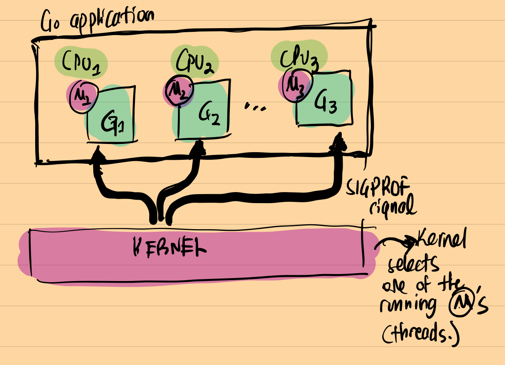
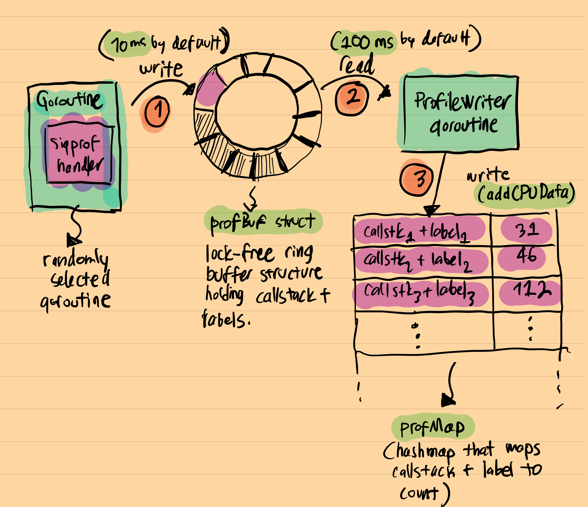

原文: Inside the Go CPU profiler,作者 Sümer Cip。我猜测 Felix Geisendörfer 肯定会进行评论，果不其然。
Go 是那种自带 profiler (分析器)的语言之一。它的运行时包含强大的自成一派的各种 profiler。其它语言，比如 Ruby、Python 和 Node.js, 它们也包含 profiler或者一些用来编写profiler的API，但是与Go的开箱即用的 profiler相比，它们提供的profiler功能有限。如果你想多了解Go提供的这些可观察工具的情况，我强烈推荐你阅读 Felix Geisendörfer的 The Busy Developer’s Guide to Go Profiling, Tracing and Observability。
作为一个好奇的工程师，我喜欢挖掘事物在底层上的工作方式，我一直想去学习Go CPU profiler底层·是怎么工作的。这篇文章就是此次探索的结果。每当我阅读Go运行时代码时，我总是学到到一些新东西，这次也不例外。
基本知识
当前市面上存在两种类型的profiler:
- tracing(跟踪): 当预定义的事件发生时进行测量。例如，函数被调用，函数退出等等。
- Sampling(采样): 定期进行测量。
Go CPU profiler 是一个采样分析器。当然Go还有一个执行跟踪器（execution tracer），它是 tracing profiler, 跟踪某些事件，例如请求锁，GC相关事件等等。
sampling profiler 通常由两个基本部分组成：
- 采样器(sampler)：定期调用回调，并且通常分析数据收集堆栈跟踪(stack trace)。不同的profiler使用不同的策略来触发回调。
- 数据收集：这是profiler收集其数据的地方：它可能会消耗内存或调用计数，基本上是与堆栈跟踪关联的一些指标。
关于其它profiler如何工作的小调查
Linux perf 使用 PMU(Performance Monitor Unit)计数器进行采样。你可以指示PMU 在某些事件发生 N 次后生成中断，例如，每 1000 个 CPU 时钟周期执行一次。
丹尼斯·巴赫瓦洛夫（Denis Bakhvalov）撰写的一篇详细文章解释了如何像 perf 和 VTune 工具使用PMU计数器来实现这一目标。一旦定期触发数据收集回调函数，剩下的工作就是收集堆栈跟踪并正确聚合它们。为了完整起见，Linux perf 使用 perf_event_open(PERF_SAMPLE_STACK_USER,...) 收集堆栈信息。捕获的堆栈跟踪通过 mmap 环形缓冲区写入用户空间。
pyspy和rbspy是著名的Python和Ruby的sampling profiler。它们都作为外部进程运行，并定期读取目标应用程序内存以捕获正在运行的线程的堆栈跟踪。在Linux中，他们使用process_vm_readv方法收集数据，如果我没有记错的话，这个API在内存读取期间会将目标应用程序暂停几毫秒。然后，它们在读取的内存中跟踪指针，以查找当前正在运行的线程结构和堆栈跟踪信息。正如人们可能猜到的那样，这是一种容易出错且复杂的方法，但效果非常好。如果我没记错的话，pyflame也使用类似的方法。
最近的profiler，如Parca（还有其它几个）使用 eBPF。eBPF 是一项最新的技术，允许在内核 VM 中运行用户空间代码。这是一项出色的技术，用于安全、网络和可观察性等许多领域。我强烈建议阅读有关eBPF的一些信息，这是一个非常大的话题，远远超出了这篇文章的范围。
如何定期触发探查器？
Go CPU profiler 是一个采样分析器。在 Linux 中，Go 运行时使用 setitimer/timer_create/timer_settime 来设置 SIGPROF 信号处理器。此处理器按runtime.SetCPUProfileRate设置的周期间隔触发，默认情况下是100Mz(10毫秒)。顺便说一句，在Go 1.18之前，Go CPU profiler的采样器存在一些严重的问题，你可以在这里看到这些问题的细节。我们记错的话，settimer API 是Linux中每个线程触发基于时间的信号的推荐方法: 从技术上讲，它的工作原理就像你期望的进程信号处理机制一样。但它并不是多核分析的良好机制。
让我们看看如何手动启用 Go CPU profiler：
|
|
一旦pprof.StartCPUProfile被调用，Go运行时就可以按照指定的时间间隔产生SIGPROF信号。Linux内核向应用程序中正在运行的线程之一发送SIGPROF信号。由于 Go 使用非阻塞 I/O，等待I/O的goroutine不会被统计为running的goroutine，Go CPU profiler 不会捕获这类goroutine的数据。顺便说一句：这是实现fgprof的基本原因。 fgprof使用runtime.GoroutineProfile获取 on-CPU 和 off-CPU的数据。
A picture is worth a thousand words; below is how Go runtime handles SIGPROF signal:
一图胜千言。以下是 Go 运行时处理SIGPROF信号的方式：

profiler 如何收集数据？
一个一个随机的运行的goroutine收到SIGPROF信号，它会被中断并执行信号处理程序。中断的 goroutine 的堆栈跟踪在此信号处理程序的上下文中获取到，然后与当前profiler标签一起保存到lock-free日志结构中（每个捕获的堆栈跟踪都可以与自定义标签相关联，您可以稍后对其进行过滤）。这个特殊的lock-free结构被命名为profBuf，它在 runtime/profbuf.go 定义，并详细解释了它是如何工作的。它是一个单写单读(single-writer,single-reader)的lock-free的ringbuffer，类似于此处介绍的数据结构。Writer是信号处理器，而reader是 profileWriter goroutine，profileWriter goroutine定期的读取此缓冲区并将结果聚合到最终的hashmap。这个最终的hashmap被命名为profMap, 定义在runtime/pprof/map.go。
以下是把刚才介绍的组合在一起的一个可视化图：

可以看到，最终的结构与常规的pprof.Profile对象非常相似：它是一个hashmap,其中的键是堆栈跟踪+标签，值是在应用程序中观察到此调用堆栈的次数。当pprof.StopCPUProfile()被调用时，分析就会停止，profileWriter goroutine调用build()。这个函数负责写profMap结构到io.Writer，此Writer由pprof.StartCPUProfile初始调用的时候提供。基本上这就是最终的pprof.Profile产生的过程。
profileWriter的伪代码可能对你理解这个过程更有帮助:
|
|
一旦我对设计有了高层次的了解，我就会问自己以下问题：
为什么 Go 为了实现一个独特的lock-free结构而花费了那么大精力只为了保存临时分析数据？为什么不定期将所有内容写入hashmap？
答案就在设计本身。
首先看的第一件事就是SIGPROF处理器就是禁用内存分派。此外，profiler代码不包含热门和锁，甚至堆栈的最大深度也是硬编码的。截止Go 1.19, 最大深度是64。所有这些细节都可以为profiler提供更高效、更可预测的开销。低且可预测的性能是生产就绪型profiler的关键。
开销
根据设计，profiler开销是恒定的？嗯，这要视情况而定。让我解释一下原因：在单个profiler中断中，会发生以下情况：
- 一个随机运行的goroutine执行上下文切换来运行SIGPROF处理器，
- 执行堆栈遍历，并且 Go 运行时将堆栈跟踪保存到lock-free ring buffer中，
- goroutine 恢复。
从理论上讲，似乎上述所有内容都应该在恒定时间内运行，因为没有发生内存分配和锁竞争。我记得所有的这是真的：以上所有事情都发生在大约1微秒（在典型的CPU上）。但是，在实践中，情况变得更糟。如果您搜索“Go CPU profiler的开销”，您将看到从 %0.5 到 %1-%5 的数字（没有发现关于这个数字的公开提及，也没有适当的证据）。这背后的原因主要与CPU的工作方式有关。现代CPU是复杂的怪兽。它们会积极地使用缓存。典型的单 CPU 内核具有三层缓存：L1、L2 和 L3。当特定的 CPU 密集型代码正在运行时，这些缓存将得到充分利用。对于某些应用程序而言，高缓存利用率尤其如此，在这些应用程序中，小（可以放入缓存中的数据）和顺序数据被大量读取。
一个很好的例子是矩阵乘法：在矩阵乘法期间，CPU大量访问内存中顺序存储的独立单元格。这些缓存友好型应用程序可能会为采样profiler产生严重的开销。虽然很容易使用prof做一些基准测试来验证这一说法，但这超出了这篇文章的范围。
综上所述，Go 运行时在保持profiler开销尽可能可预测和尽可能低方面做得很好。如果你不相信我，你有所质疑，也许下面引用的一个讨论对话可以说服你：
在谷歌，我们持续分析Go生产服务，这样做是安全的。
另一个来自datadog的持续profiler的代码提交也可以印证这一点：
在许多高容量内部工作负荷上测试此默认值后(默认开启profiler)，我们已确定此默认值对生产是安全的。
最后，基于上述理论，我们可以进行以下观察结果：
在典型的 I/O 密集型应用程序上，profiler的开销将非常小。
这是因为当有许多休眠/空闲的 goroutine 时，CPU 缓存丢弃没有太大区别。在 Go CPU profiler基准测试期间，我们一遍又一遍地观察到这一点：在典型的 I/O 密集型应用程序上，开销实际上为零（或统计上微不足道）。但是，同样，提供经验证据超出了这篇文章的范围，人们可以通过在profiler打开和关闭时，观察Go Web应用程序的负载测试期间的吞吐量来做到这一点。
结论
我喜欢这种设计的一点是，它证明了你可以根据你对底层数据结构的访问模式的理解程度来优化代码。在这种情况下，Go 运行时使用lock-free结构，即使在大多数情况下这完全是矫枉过正。Go运行时充满了像这样的聪明优化，我强烈建议你花时间深入研究你觉得有趣的部分。
我希望你喜欢它！
参考资料
- https://github.com/DataDog/go-profiler-notes/blob/main/guide/README.md
- https://easyperf.net/blog/2018/06/01/PMU-counters-and-profiling-basics
- https://www.instana.com/blog/go-profiler-internals/
- https://www.datadoghq.com/blog/engineering/profiling-improvements-in-go-1-18/
- http://www.cse.cuhk.edu.hk/~pclee/www/pubs/ancs09poster.pdf
- https://easyperf.net/blog/2018/06/01/PMU-counters-and-profiling-basics